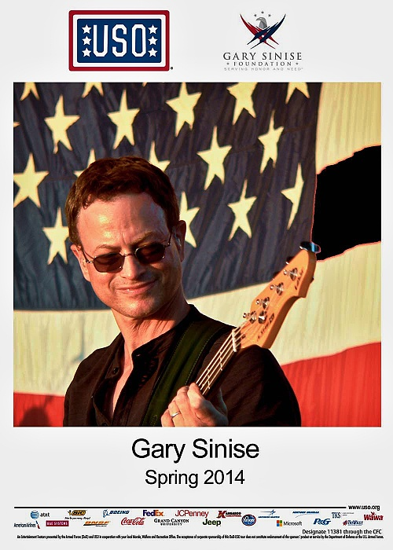
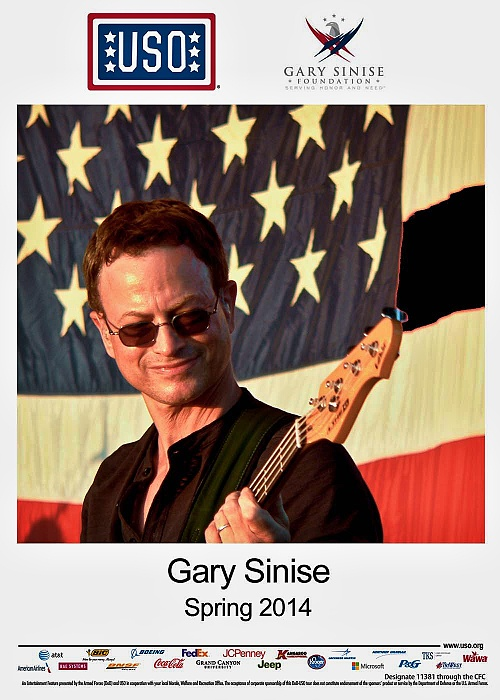

Fabry Studio has been in business for over 50 years in Nashville, Tennessee. Our clients number among the biggest and best known in the publishing and recording industry. You generally won't find us in advertisements or other publications. Our customers come back for the quality and reliability they can count on over and over again.
Fabry Studio has stood the test of time, and while our physical location is Nashville, TN, we cater to clients worldwide. In fact, we are a proud service provider for USO tours.
 

Fabry Studio is equipped and ready to provide high-quality digital editing and image alterations that put that professional look to your prints. We will be happy to work with you to uniquely identify your photo or art work with personal captions that set you apart from the rest. Your files may be submitted digitally, or we can scan your image for you at the level of detail needed for your production requirements. Once we have your image we can edit or alter your image to meet your needs. You control the level of work that you want us to add in making your promotional material. Use the same art work on various products! You only have to pay for the edits that are required once. We don't re-charge you for work that's already been done. If it's ready, let's print it!
Digital Files provide the best way to edit and prepare your image before the final production of your order. We have the equipment and talent to bring out the best in your work. Don't settle for less! Custom scanning: Don't worry that you don't have a scanner, we do! We'll scan your photo or art work at the level of detail best suited for your needs. Talk to us about how our services will bring out the details that will make you stand out.